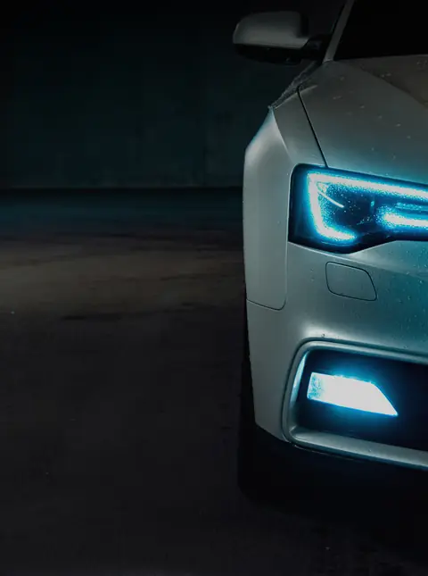
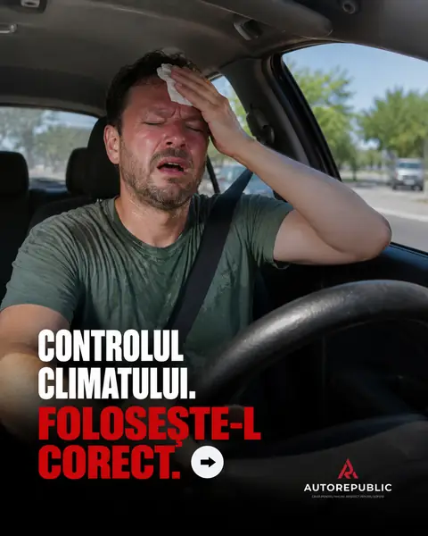
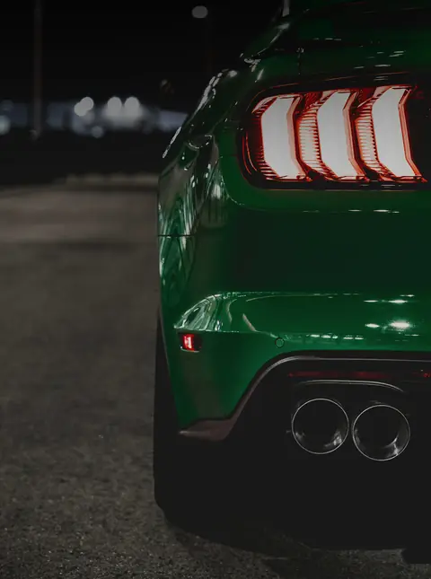
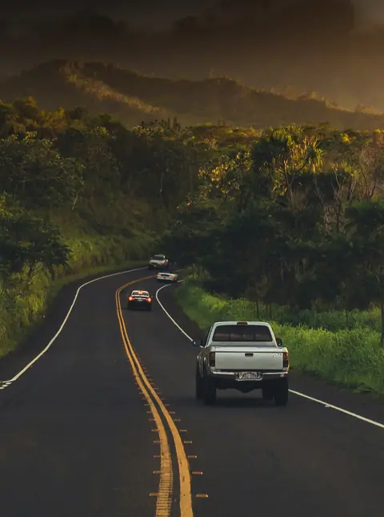

Услуги автосервиса в Кишинёве
Диагностика, механический и электрический ремонт, шиномонтаж, техосмотр, кузов и мойка почти для всех марок. Выберите услугу и узнайте, что входит, сколько длится и как записаться.
 Компьютерная диагностикаСчитываем ошибки и находим причину, а не только симптом.
Компьютерная диагностикаСчитываем ошибки и находим причину, а не только симптом. ТО и замена маслаМасло, фильтры и плановые проверки в нужный срок.
ТО и замена маслаМасло, фильтры и плановые проверки в нужный срок. Ремонт двигателяОт течи масла до ГРМ и капитального ремонта.
Ремонт двигателяОт течи масла до ГРМ и капитального ремонта. ТормозаКолодки, диски, суппорты и тормозная жидкость.
ТормозаКолодки, диски, суппорты и тормозная жидкость. Подвеска и рулевоеАмортизаторы, сайлентблоки, шаровые, стойки и рулевая рейка.
Подвеска и рулевоеАмортизаторы, сайлентблоки, шаровые, стойки и рулевая рейка. Коробка передачАКПП и МКПП, сцепление и масло в коробке.
Коробка передачАКПП и МКПП, сцепление и масло в коробке.
АвтоэлектрикАккумулятор, генератор, стартер, свет и проводка.
АвтокондиционерЗаправка фреоном, поиск утечек и антибактериальная обработка. ШиномонтажСезонная смена шин, балансировка и ремонт проколов.
ШиномонтажСезонная смена шин, балансировка и ремонт проколов. Развал-схождениеРегулировка углов колёс: машина едет прямо, шины служат дольше.
Развал-схождениеРегулировка углов колёс: машина едет прямо, шины служат дольше. ТехосмотрГотовим машину, чтобы она прошла техосмотр с первого раза.
ТехосмотрГотовим машину, чтобы она прошла техосмотр с первого раза.
Кузовной ремонтРемонт после ударов и антикоррозийная защита. Мойка и детейлингКомплексная мойка, химчистка салона и защита кожи.
Мойка и детейлингКомплексная мойка, химчистка салона и защита кожи.
АвтострахованиеRCA, Зелёная карта и КАСКО прямо в сервисе.Как мы работаем
- Вы записываетесьОнлайн, в WhatsApp или по телефону. Выбираете день и время.
- Делаем диагностикуПроверяем машину и находим причину, а не только симптом.
- Вы утверждаете ценуГоворим, что нужно сделать и сколько это стоит. Работаем только после вашего согласия.
- РемонтируемС оригинальными или качественными аналоговыми запчастями, под ваш бюджет.
- Отдаём машинуОбъясняем, что сделали и когда следующая проверка.
Запишитесь за 2 минуты
Выберите работу, день и время. Мы перезвоним для подтверждения.